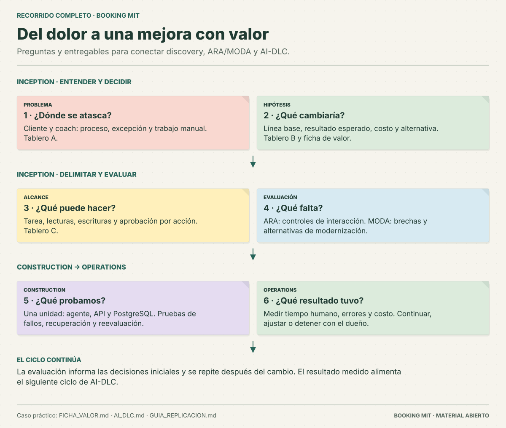
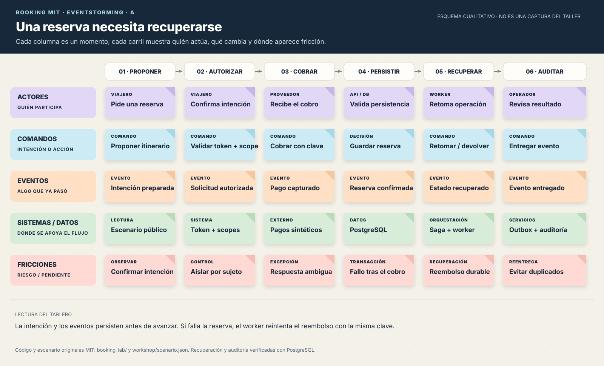
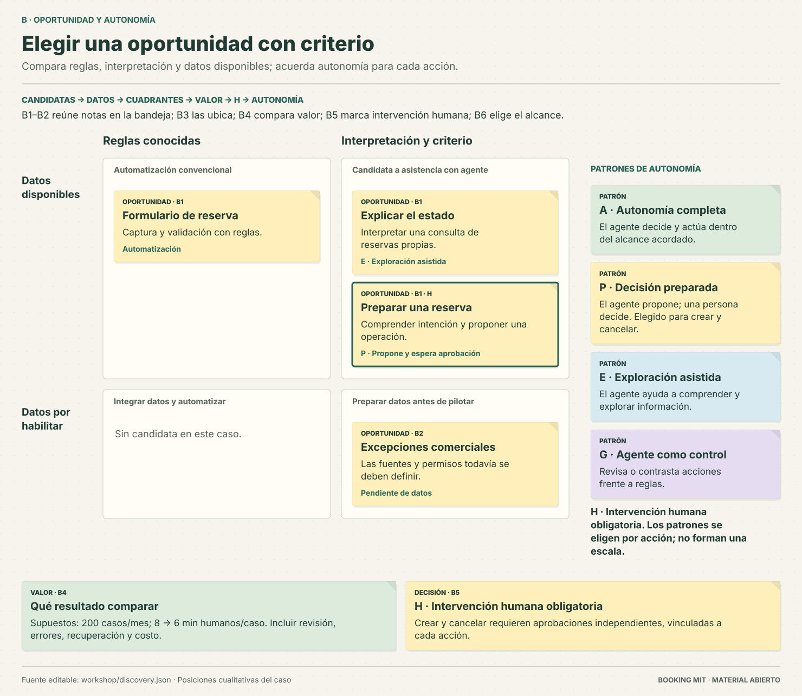
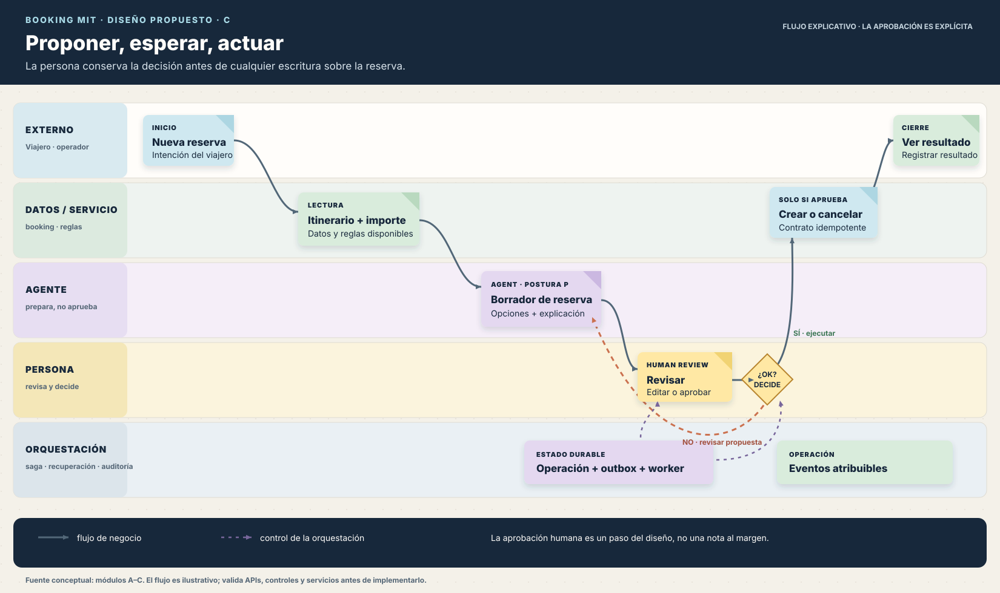
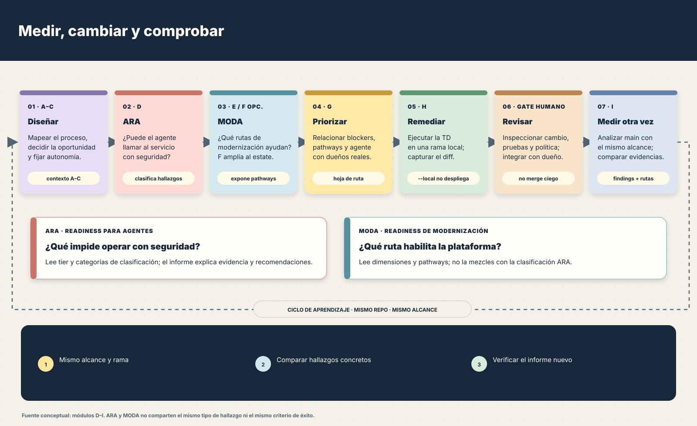
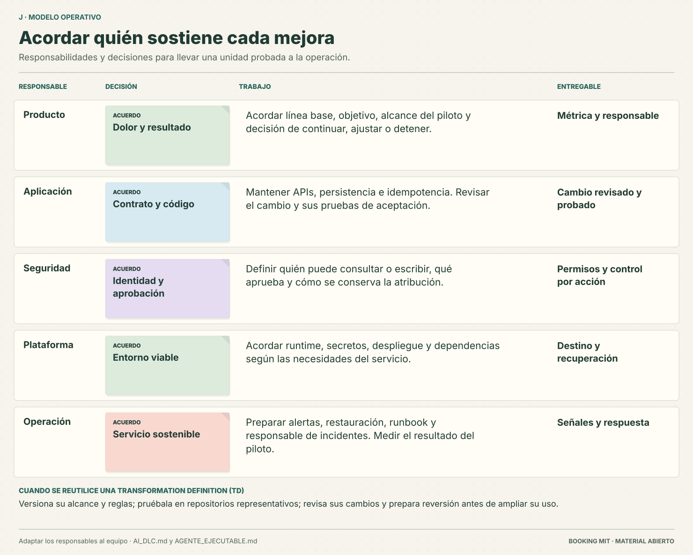

Cómo leerlos: son esquemas cualitativos basados en la guía guardada. En pantallas pequeñas desplaza cada tablero horizontalmente para leerlo. No reproducen literalmente los tableros del evento ni representan métricas observadas.
Qué merece construirse: decisiones con evidencia
Conecta problema, métrica, autonomía, evaluación técnica, cambios y medición. Las fases de AI-DLC organizan los entregables. La ficha expresa una hipótesis de negocio; las pruebas verifican el comportamiento del laboratorio.
Abrir el SVG

EventStorming: una reserva necesita recuperarse
Seguir cada momento ayuda a encontrar el cruce entre eventos del dominio, decisiones y puntos de fricción. El historial de excepciones de socios no está disponible por una API.
Abrir el SVG

Oportunidad: juicio más datos
El ejemplo favorece un agente donde hay juicio y acceso a la información necesaria. La autonomía P prepara una propuesta para aprobación; los reembolsos mantienen un control humano.
Abrir el SVG

Workflow: proponer, esperar, actuar
El diseño conserva la confirmación humana. La API ejecuta la operación y PostgreSQL conserva el estado, mientras el worker recupera y entrega la auditoría. La política conversacional corresponde al cliente que integra el backend.
Abrir el SVG

Medir, priorizar, cambiar y volver a medir
ARA evalúa si el agente puede operar con seguridad; MODA recomienda rutas de modernización. Son lecturas complementarias. La remediación local requiere revisión antes de integrarse.
Abrir el SVG

Operación: plataforma, equipos y puertas
Una TD depende de la plataforma que la recibe. El tablero asigna responsabilidades para revisar, probar, desplegar gradualmente y responder a incidentes.
Abrir el SVG
